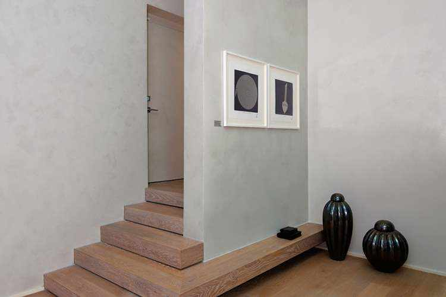

Unsere Empfehlung: MICRODECK
Microdeck ist der für Fußböden innen am besten geeignete Mikrozement, da er mit seiner großen Beständigkeit und Härte gegen Abnutzung, Stöße, Kratzer usw. auch in stark beanspruchten Laufflächen verwendet werden kann. Sie können offene, fugenlose Bereiche anlegen, die einfach zu reinigen und instandzuhalten sind.
Microdeck ist so vielfältig einsetzbar, dass es auch für Treppen, Wände, Duschwannen, Waschbecken, Arbeitsplatten, Fassaden und Terrassen verwendet werden kann.
Microdeck verleiht den Räumen, in denen er verwendet wird, ein sehr natürliches und elegantes Aussehen. Seine Textur ist mittelkörnig, weshalb der Wassereffekt im Finish geringer ist.
Er ist einfach mit anderen Materialien zu kombinieren. Wir empfehlen Ihnen Naturholz-Parkett oder hydraulische Fußbodenfliesen. Sie werden sehen, wie persönlich und modern das aussieht!
Ästhetisch sieht er Sichtbeton ähnlich, ist aber NICHT dasselbe.
Mit Mikrozement haben Sie noch weitere Vorteile:

Unsere Empfehlung: MICROFINO
Microfino ist der für Wände empfehlenswerte Mikrozement. Er ist ausschließlich für vertikale, nicht begehbare Flächen gedacht. Wir raten von anderen Anwendungsarten ab, weil er weniger beständig und hart als die restlichen Mikrozementarten ist.
Sein Finish ist dank seiner feinkörnigen Textur sehr angenehm, seidig und weich im Griff. Er schafft einen sehr charakteristischen und bei diesem Material wünschenswerten Wasserzeicheneffekt.
Ästhetisch sieht er Kalkstuck ähnlich, ist aber NICHT dasselbe.
Mit Mikrozement haben Sie noch weitere Vorteile:
Eine weitere Empfehlung: MICRODECK
Microdeck kann mit seiner großen Flexibilität auch auf Wänden verwendet werden.
Wenn Sie ein Finish suchen, das sich vom Microfino abhebt, das einheitlicher und fast ohne Wasser, gleichzeitig aber genauso glatt und seidig ist, dann können Sie das mit Microdeck erreichen.
Unsere Empfehlung: MICROSTONE
Microstone ist dank seiner rutschfesten Eigenschaften und der hohen Beständigkeit der für Außenbereiche empfehlenswerteste Mikrozement. Er wird normalerweise auf Terrassen und Veranden und an Fassaden verwendet.
Seine grobkörnige Textur nähert sich dem Aussehen von Stein an. Je nach der Auswahl der Farbstoffe sind die Ergebnisse faszinierend. Wenn wir beispielsweise den Farbton Schiefer wählen, ähnelt das Aussehen Vulkangestein und lässt niemanden unberührt.

Unsere Empfehlung: MICROBASE
Microbase oder Vorbereitungs-Mikrozement, auch rustikaler Mikrozement genannt, ist wegen seiner charakteristischen Textur besonders empfehlenswert, wenn man diesen Effekt erreichen möchte.
Microbase hat zwei mögliche Verwendungszwecke: als Grundlage und als Finish. Er wird hauptsächlich als Grundlage für die Vorbereitung der Oberfläche eingesetzt, es deckt das Netz ab und gibt der Verkleidung die notwendige Härte, um danach andere Arten von Mikrozement aufzutragen, wie zum Beispiel Microfino, Microdeck oder Microstone. Er wirkt weder selbstnivellierend noch als Füllung, verwenden Sie ihn nicht zu diesen Zwecken.
Wird Microbase als Finish eingesetzt, erhalten wir ein rustikales Aussehen mit unregelmäßiger und handwerklicher Textur. Überraschende und angenehme Umgebungen können durch das Spiel mit seiner Textur sowohl auf Fußböden als auch an Wänden entstehen.

Unsere Empfehlung: AQUACIMENT
Aquaciment ist ein besonders empfehlenswerter Mikrozement für die Verkleidung von Oberflächen, die in permanentem Kontakt mit dem Wasser stehen, wie zum Beispiel Swimmingpools, Teiche, Brunnen usw., sowohl im Fall von Neubauten als von Nachrüstungen. Sie können komplett durchgehende Flächen ohne Fugen schaffen. Im Kontakt mit dem Wasser verhärtet er sich immer weiter. Auch wenn zur Gewährleistung der Festigkeit keinerlei Lackierung vonnöten ist, empfehlen wir diese doch, um die Reinigung und die spätere Instandhaltung zu erleichtern.
Das Produkt wird in drei verschiedenen Korntexturen angeboten:

Aquaciment erlaubt alle Arten von Farben, hier sind keinerlei Grenzen gesetzt. Das Beste von allem ist, dass Sie Grenzlinien oder Zeichnungen in verschiedenen Farben zeichnen können, ebenso Intarsien mit verschiedenen Materialien wie Mosaiken, Wappen, Emblemen usw. Ihr Swimmingpool wird ganz persönlich auf Sie abgestimmt!
Mikrozement kann sowohl für Küchenwände als auch für Küchenböden verwendet werden und ist somit eine Alternative zu Fliesen. Da es sich um ein fugenloses Material handelt, ist die Reinigung sehr viel einfacher. Allerdings ist es aufgrund seiner an Kunstharzen reichen Zusammensetzung nicht geeignet für einen direkten Kontakt mit Wärmequellen wie zum Beispiel heißen Töpfen und Pfannen, weshalb seine Verwendung für Arbeitsplatten in Küchen nicht empfohlen wird, es sei denn, der Kunde kennt dieses Risiko und möchte es eingehen.
Wir empfehlen immer die Verwendung von Glasfasernetzen, insbesondere für Fliesenböden und -wände, ebenso wie für die Fugen zwischen Rigipsplatten. Es wird zur Armierung des Grundierungs- Mikrozements und zur Vermeidung von durch die Spannungen im Unterboden des Mikrozements verursachten Rissen verwendet. Die endgültige Entscheidung über seine Verwendung trifft selbstverständlich der Handwerker, aber Sie müssen über die Probleme informiert werden, die entstehen können, wenn kein Netz verwendet wird.
Das ist abhängig von den Wetterbedingungen, der Feuchtigkeit, der Raumtemperatur, ob direkte Sonneneinstrahlung vorhanden ist, ob es sich um einen geschlossenen und feuchten Raum wie beispielsweise ein Badezimmer handelt usw. Aber wir sollten so viel Zeit wie möglich vergehen lassen, damit sich keine weißen Flecken bilden, weil die erste Beschichtung noch feucht ist.